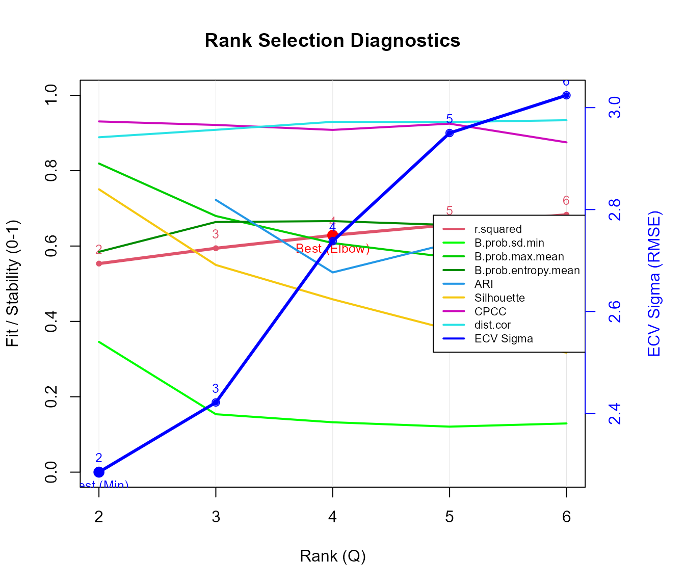
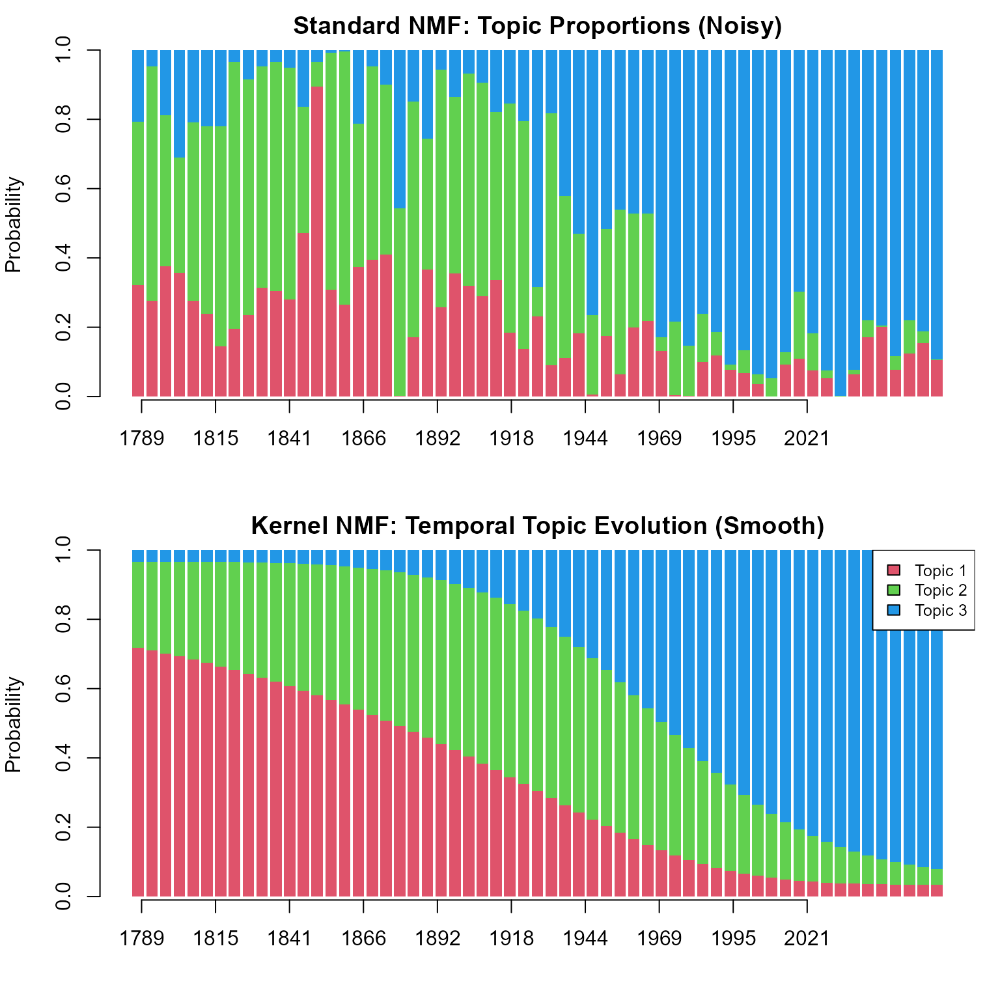

vignettes/topic-modeling-with-nmfkc.Rmd
topic-modeling-with-nmfkc.RmdNon-negative Matrix Factorization (NMF) is a powerful technique for topic modeling. By decomposing a document-term matrix, we can simultaneously discover latent Topics (clusters of words) and their Trends (proportions in documents).
This vignette demonstrates how to use the nmfkc package
to analyze the U.S. presidential inaugural addresses using the
quanteda package.
We will cover:
nmfkc.First, let’s load the necessary packages.
library(nmfkc)
#> Package: nmfkc (Version 0.5.8 , released on 20 12 2025 )
#> https://ksatohds.github.io/nmfkc/
library(quanteda)
#> Warning: package 'quanteda' was built under R version 4.4.2
#> Package version: 4.2.0
#> Unicode version: 15.1
#> ICU version: 74.1
#> Parallel computing: 32 of 32 threads used.
#> See https://quanteda.io for tutorials and examples.We create a Document-Feature Matrix (DFM) where rows represent documents and columns represent words.
# Load the corpus from quanteda
corp <- corpus(data_corpus_inaugural)
# Preprocessing: tokenize, remove stopwords, and punctuation
tok <- tokens(corp, remove_punct = TRUE)
tok <- tokens_remove(tok, pattern = stopwords("en", source = "snowball"))
# Create DFM and filter
df <- dfm(tok)
df <- dfm_select(df, min_nchar = 3) # Remove short words (<= 2 chars)
df <- dfm_trim(df, min_termfreq = 100) # Remove rare words (appearing < 100 times)
# --- CRITICAL STEP ---
# quanteda's DFM is (Documents x Words).
# nmfkc expects (Words x Documents).
# We must transpose the matrix.
d <- as.matrix(df)
# Sort by frequency
index <- order(colSums(d), decreasing=TRUE)
d <- d[,index]
Y <- t(d)
dim(Y) # Features (Words) x Samples (Documents)
#> [1] 67 59Before fitting the model, we need to decide the number of topics
().
The nmfkc.rank() function helps us choose an appropriate
rank.
Here, we set save.time = FALSE to perform
Element-wise Cross-Validation (Wold’s CV). This method
randomly holds out individual matrix elements and evaluates how well the
model predicts them, providing a robust measure for rank selection
(though it takes more computation time).
# Evaluate ranks from 2 to 6
# save.time=FALSE enables the robust Element-wise CV
nmfkc.rank(Y, rank = 2:6, save.time = FALSE)
#> Y(67,59)~X(67,2)B(2,59)...0sec
#> Y(67,59)~X(67,3)B(3,59)...0sec
#> Y(67,59)~X(67,4)B(4,59)...0sec
#> Y(67,59)~X(67,5)B(5,59)...0sec
#> Y(67,59)~X(67,6)B(6,59)...0sec
#> Running Element-wise CV (this may take time)...
#> Performing Element-wise CV for Q = 2,3,4,5,6 (5-fold)...
#> Y(67,59)~X(67,2)B(2,59)...0sec
#> Y(67,59)~X(67,2)B(2,59)...0sec
#> Y(67,59)~X(67,2)B(2,59)...0sec
#> Y(67,59)~X(67,2)B(2,59)...0sec
#> Y(67,59)~X(67,2)B(2,59)...0sec
#> Y(67,59)~X(67,3)B(3,59)...0sec
#> Y(67,59)~X(67,3)B(3,59)...0sec
#> Y(67,59)~X(67,3)B(3,59)...0sec
#> Y(67,59)~X(67,3)B(3,59)...0sec
#> Y(67,59)~X(67,3)B(3,59)...0sec
#> Y(67,59)~X(67,4)B(4,59)...0sec
#> Y(67,59)~X(67,4)B(4,59)...0sec
#> Y(67,59)~X(67,4)B(4,59)...0sec
#> Y(67,59)~X(67,4)B(4,59)...0sec
#> Y(67,59)~X(67,4)B(4,59)...0sec
#> Y(67,59)~X(67,5)B(5,59)...0sec
#> Y(67,59)~X(67,5)B(5,59)...0sec
#> Y(67,59)~X(67,5)B(5,59)...0sec
#> Y(67,59)~X(67,5)B(5,59)...0sec
#> Y(67,59)~X(67,5)B(5,59)...0sec
#> Y(67,59)~X(67,6)B(6,59)...0sec
#> Y(67,59)~X(67,6)B(6,59)...0sec
#> Y(67,59)~X(67,6)B(6,59)...0sec
#> Y(67,59)~X(67,6)B(6,59)...0sec
#> Y(67,59)~X(67,6)B(6,59)...0sec
#> $rank.best
#> [1] 2
#>
#> $criteria
#> rank r.squared ICp AIC BIC B.prob.sd.min B.prob.entropy.mean
#> 1 2 0.5714525 19.39498 8869.595 10440.15 0.3476271 0.5889663
#> 2 3 0.6129089 27.93205 8717.283 11073.12 0.1582146 0.6624310
#> 3 4 0.6535278 36.46005 8529.063 11670.18 0.1301392 0.6519002
#> 4 5 0.6866667 44.99848 8382.099 12308.49 0.1227179 0.6572496
#> 5 6 0.7186176 53.52984 8207.187 12918.86 0.1151692 0.6642655
#> B.prob.max.mean ARI silhouette CPCC dist.cor sigma.ecv
#> 1 0.8186375 NA 0.7456899 0.9220031 0.9049180 3.287153
#> 2 0.6805368 0.7493380 0.5141000 0.9041294 0.9128002 3.675603
#> 3 0.6102601 0.5737936 0.4743689 0.8675133 0.9239746 4.278131
#> 4 0.5510541 0.6236933 0.3397598 0.8782690 0.9283578 4.621801
#> 5 0.5142690 0.6637536 0.3059911 0.8701347 0.9274730 4.683195Looking at the diagnostics (e.g., the minimum ECV Sigma, the elbow of the R-squared curve, or high Cophenetic Correlation), let’s assume Rank = 3 is a reasonable choice for this overview.
We fit the standard NMF model
()
with rank = 3. In the context of topic modeling:
rank <- 3
# Set seed for reproducibility
res_std <- nmfkc(Y, rank = rank, seed = 123, prefix = "Topic")
#> Y(67,59)~X(67,3)B(3,59)...0sec
# Check Goodness of Fit (R-squared)
res_std$r.squared
#> [1] 0.6129089We can identify the meaning of each topic by looking at the words
with the highest weights in the basis matrix X.
# Extract top 10 words for each topic from X.prob (normalized X)
Xp <- res_std$X.prob
for(q in 1:rank){
message(paste0("----- Featured words on Topic [", q, "] -----"))
print(paste0(rownames(Xp), "(", rowSums(Y), ") ", round(100*Xp[,q], 1), "%")[Xp[,q]>=0.5])
}
#> ----- Featured words on Topic [1] -----
#> [1] "government(564) 54.1%" "states(334) 62.7%" "shall(316) 59.3%"
#> [4] "public(225) 72%" "united(203) 68.1%" "union(190) 53.9%"
#> [7] "war(181) 65.4%" "national(158) 66.8%" "congress(130) 60.1%"
#> [10] "laws(130) 81.2%" "law(129) 60%" "just(128) 56.9%"
#> [13] "interests(115) 57.6%" "among(108) 62.9%" "foreign(104) 72.2%"
#> ----- Featured words on Topic [2] -----
#> [1] "may(343) 56.7%" "one(267) 57.7%"
#> [3] "power(241) 91%" "constitution(209) 88.6%"
#> [5] "spirit(140) 76.5%" "rights(138) 62.4%"
#> [7] "never(132) 57.2%" "liberty(123) 69.8%"
#> [9] "well(120) 61.2%" "duty(120) 51%"
#> [11] "state(110) 76.1%" "much(108) 53.3%"
#> [13] "powers(101) 65.7%"
#> ----- Featured words on Topic [3] -----
#> [1] "must(376) 61.4%" "world(319) 97.6%" "nation(305) 63.6%"
#> [4] "peace(258) 57.5%" "new(250) 90.4%" "time(220) 55.4%"
#> [7] "america(202) 100%" "nations(199) 57.8%" "freedom(185) 80.3%"
#> [10] "american(172) 59.9%" "let(160) 99.8%" "make(147) 56.1%"
#> [13] "justice(142) 52.1%" "life(138) 73.9%" "work(124) 90.9%"
#> [16] "hope(120) 64.3%" "know(111) 100%" "fellow(110) 57.3%"
#> [19] "history(105) 79.4%" "today(105) 100%"(Note: Interpretation depends on the result. For example, one topic might contain words like “government, people, states” (Political), while another might have “world, peace, freedom” (International).)
One of the unique features of nmfkc is Kernel
NMF. In standard NMF, the order of documents is ignored; each
speech is treated independently. However, inaugural addresses have a
strong temporal component. By using the “Year” as a
covariate, we can smooth the topic proportions over time to see
historical shifts.
We construct a covariate matrix U using the year of the
address. We then find the optimal kernel bandwidth (beta)
using Cross-Validation.
# Covariate: Year of the address
years <- as.numeric(substring(names(data_corpus_inaugural), 1, 4))
U <- t(as.matrix(years))
# Optimize beta (Gaussian Kernel width)
# We test a specific range of betas to locate the minimum CV error.
beta_candidates <- c(0.2, 0.5, 1, 2, 5) / 10000
# Run CV to find the best beta
# Note: We use the same rank (Q=3) as selected above.
cv_res <- nmfkc.kernel.beta.cv(Y, rank = rank, U = U, beta = beta_candidates, plot = FALSE)
#> beta=2e-05...0.1sec
#> beta=5e-05...0sec
#> beta=1e-04...0sec
#> beta=2e-04...0sec
#> beta=5e-04...0sec
best_beta <- cv_res$beta
print(best_beta)
#> [1] 2e-04Now we fit the model using the kernel matrix A. This
enforces that documents close in time (similar years) should have
similar topic distributions.
# Create Kernel Matrix
A <- nmfkc.kernel(U, beta = best_beta)
# Fit NMF with Kernel Covariates
res_ker <- nmfkc(Y, A = A, rank = rank, seed = 123, prefix = "Topic")
#> Y(67,59)~X(67,3)C(3,59)A(59,59)=XB(3,59)...0secLet’s compare how topic proportions change over time.
par(mfrow = c(2, 1), mar = c(4, 4, 2, 1))
# Prepare Axis Labels (Rounded to integers)
at_points <- seq(1, ncol(Y), length.out = 10)
labels_years <- round(seq(min(years), max(years), length.out = 10))
# 1. Standard NMF (Noisy)
barplot(res_std$B.prob, col = 2:(rank+1), border = NA, xaxt='n',
main = "Standard NMF: Topic Proportions (Noisy)", ylab = "Probability")
axis(1, at = at_points, labels = labels_years)
# 2. Kernel NMF (Smooth trend)
barplot(res_ker$B.prob, col = 2:(rank+1), border = NA, xaxt='n',
main = "Kernel NMF: Temporal Topic Evolution (Smooth)", ylab = "Probability")
axis(1, at = at_points, labels = labels_years)
# Legend
legend("topright", legend = paste("Topic", 1:rank), fill = 2:(rank+1), bg="white", cex=0.8)